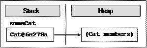
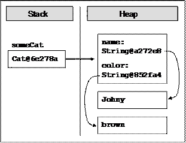
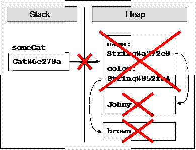
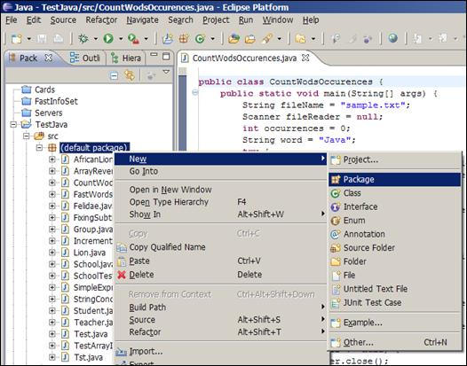

Глава 11. Създаване и използване на обекти
Автор
Теодор Стоев
Светлин Наков
В тази тема...
В настоящата тема ще се запознаем накратко с основните понятия в обектно-ориентираното програмиране – класовете и обектите – и ще обясним как да използваме класовете от стандартните библиотеки на Java. Ще се спрем на някои често използвани системни класове и ще видим как се създават и използват техни инстанции (обекти). Ще разгледаме как можем да осъществяваме достъп до полетата на даден обект, как да извикваме конструктори и как да работим със статичните полета в класовете. Накрая ще се запознаем с понятието пакети – какво ни помагат, как да ги включваме и използваме.
Класове и обекти
През последните няколко десетилетия програмирането и информатиката като цяло претърпяват невероятно развитие и се появяват концепции, които променят изцяло начина, по който се изграждат програми. Точно такава радикална идея въвежда обектно-ориентираното програмиране (ООП). Ще изложим кратко въведение в принципите на ООП и понятията, които се използват в него. Като начало ще обясним какво представляват класовете и обектите. Тези две понятия стоят в основата на ООП и са неразделна част от ежедневието на почти всеки съвременен програмист.
Какво е обектно-ориентирано програмиране?
Обектно-ориентираното програмиране е модел на програмиране, който използва обекти и техните взаимодействия за изграждането на компютърни програми. По този начин се постига лесен за разбиране опростен модел на предметната област, който дава възможност на програмиста интуитивно (чрез проста логика) да решава много от задачите, които възникват в реалния свят.
Засега няма да навлизаме в детайли за това какви са целите и предимствата на ООП, както и да обясняваме подробно принципите при изграждане на йерархии от обекти. Ще вмъкнем само, че програмните техники на ООП често включват капсулация, модулност, полиморфизъм и наследяване. Тези техники са извън целите на настоящата тема, затова ще ги разгледаме по-късно в главата "Принципи на обектно-ориентираното програмиране". Сега ще се спрем на обектите като основно понятие в ООП.
Какво е обект?
Ще въведем понятието обект в контекста на ООП. Софтуерните обекти моделират обекти от реалния свят или абстрактни концепции (които също разглеждаме като обекти).
Примери за реални обекти са хора, коли, стоки, покупки и т.н. Абстрактните обекти са понятия в някоя предметна област, които се налага да моделираме и използваме в компютърна програма. Примери за абстрактни обекти са структурите от данни стек, опашка, списък и дърво. Те не са предмет на настоящата тема, но ще ги разгледаме в детайли по-нататък.
В обектите от реалния свят (също и в абстрактните обекти) могат да се отделят следните две групи характеристики:
- Състояния (states) – това са характеристики на обекта, които по някакъв начин го определят и описват по принцип или в конкретен момент.
- Поведения (behaviors) – това са специфични характерни действия, които обектът може да извършва.
Нека за пример вземем обектът от реалния свят "куче". Състояния на кучето могат да бъдат "име", "цвят на козината" и "порода", а негови поведения – "лаене", "седене" и "ходене".
Обектите в ООП обединяват данни и средствата за тяхната обработка в едно цяло. Те съответстват на обектите от реалния свят и съдържат в себе си данни и действия:
- Член-данни (data members) – представляват променливи, вградени в обектите, които описват състоянията им.
- Методи (methods) – вече сме ги разглеждали в детайли. Те са инструментът за изграждане на поведението на обектите.
Какво е клас?
Класът дефинира абстрактните характеристики на даден обект. Може още да се каже, че класът е план или шаблон, който описва природата на нещо (някакъв обект). Класовете са градивните елементи на ООП и са неразделно свързани с обектите. Нещо повече, всеки обект е представител на единствен точно определен клас.
Ще дадем пример за клас и обект, който е негов представител. Нека имаме клас Dog и обект Lassie, който е представител на класа Dog (казваме още обект от тип Dog). Класът Dog описва характеристиките на всички кучета, докато Lassie е конкретно куче.
Класовете предоставят модулност и структурност на обектно-ориентираните програми. Техните характеристики трябва да са смислени в общ контекст, така че да могат да бъдат разбрани и от хора, които са запознати с проблемната област, без да са програмисти. Например, не може класът Dog да има характеристика "RAM памет" поради простата причина, че в контекста на този клас такава характеристика няма смисъл.
Класове, атрибути и поведение
Класът дефинира характеристиките на даден обект (които ще наричаме атрибути) и неговото поведение (действията, които обектът може да извършва). Атрибутите на класа се дефинират като собствени променливи в тялото му (наречени член-променливи). Поведението на обектите се моделира чрез дефиниция на методи в класовете.
Ще илюстрираме казаното дотук като дадем пример за реална дефиниция на клас. Нека се върнем отново на примера с кучето, който вече дадохме по-горе. Искаме да дефинираме клас Dog, който моделира реалният обект "куче". Класът ще включва характеристики, общи за всички кучета (като порода и цвят на козината), а също и характерно за кучетата поведение (като лаене, седене, ходене). В такъв случай ще имаме атрибути breed и furColor, а поведението ще бъде имплементирано чрез методите bark(), sit(), walk().
Обектите – инстанции на класовете
От казаното дотук знаем, че всеки обект е представител на точно един клас и е създаден по шаблон на този клас. Създаването на обект от дефиниран клас наричаме инстанциране (instantiation). Инстанция (instance) е фактическият обект, който се създава от класа по време на изпълнение на програмата.
Всеки обект е инстанция на конкретен клас. Тази инстанция се характеризира със състояние (state) – множество от стойности, асоциирани с атрибутите на класа.
В контекста на така въведените понятия, обектът се състои от две неща: моментното състояние и поведението, дефинирано в класа на обекта. Състоянието е специфично за инстанцията (обекта), но поведението е общо за всички обекти, които са представители на този клас.
Класове в Java
Дотук разгледахме някои общи характеристики на ООП. Голяма част от съвременните езици за програмиране са обектно-ориентирани. Всеки от тях има известни особености при работата с класовете и обектите. В тази книга ще се спрем само на един от тези езици – Java. Държим да отбележим, че знанията за ООП в Java ще бъдат от полза на читателя без значение кой обектно-ориентиран език използва в практиката.
Какво представляват класовете в Java?
Класът в Java се дефинира чрез ключовата дума class, последвана от идентификатор (име) на класа и съвкупност от член-данни и методи, обособени в собствен блок код.
Класовете в Java могат да съдържат следните елементи:
- Полета (fields) – член-променливи от определен тип;
- Свойства (properties) – това са специален вид елементи, които разширяват функционалността на полетата като дават възможност за допълнителна обработка на данните при извличането и записването им. Ще се спрем по-подробно на тях в темата "Дефиниране на класове";
- Методи – реализират манипулацията на данните.
Примерен клас
Ще дадем пример за прост клас в Java, който съдържа изброените елементи. Класът Cat моделира реалния обект котка и притежава свойствата име и цвят. Посоченият клас дефинира няколко полета, свойства и методи, които по-късно ще използваме наготово. Следва дефиницията на класа (засега няма да разглеждаме в детайли дефиницията на класовете – ще обърнем специално внимание на това в главата "Дефиниране на класове"):
|
public class Cat { // Field name private String name; // Field color private String color;
// Getter of property name public String getName() { return this.name; }
// Setter of property name public void setName(String name) { this.name = name; }
// Getter of property color public String getColor() { return this.color; }
// Setter of property color public void setColor(String color) { this.color = color; }
// Default constructor public Cat() { this.name = "Unnamed"; this.color = "gray"; }
// Constructor with parameters public Cat(String name, String color) { this.name = name; this.color = color; }
// Method sayMiau public void sayMiau() { System.out.printf("Cat %s said: Miauuuuuu!%n", name); } } |
Извикването на метода System.out.printf(…) на класа java.lang.System е пример за употребата на системен клас в Java. Системни наричаме класовете, дефинирани в стандартните библиотеки за изграждане на приложения с Java (или друг език за програмиране). Те могат да се използват във всички наши приложения на Java. Такива са например класовете String, System и Math, които ще разгледаме малко по-късно.
Важно е да се знае, че имплементацията на класовете е капсулирана (скрита). При използването на методите на даден клас от приложния програмист, тяхната имплементация е независима от употребата им. При системни класове имплементация обикновено дори не е достъпна за програмиста, който ги използва. Това е така, защото за програмиста е от значение какво правят методите, а не как го правят. По този начин се създават нива на абстракция, което е един от основните принципи в ООП.
Ще обърнем специално внимание на системните класове малко по-късно. Сега е време да се запознаем със създаването и използването на обекти в програмите.
Създаване и използване на обекти
Засега ще се фокусираме върху създаването и използването на обекти в нашите програми. Ще работим с вече дефинирани или системни класове – особеностите при дефинирането на наши собствени класове ще разгледаме по-късно в темата "Дефиниране на класове".
Създаване и освобождаване на обекти
Създаването на обекти от предварително дефинирани класове по време на изпълнението на програмата става чрез оператора new. Новосъздаденият обект обикновено се присвоява на променлива от тип, съвпадащ с класа на обекта. Ще отбележим, че при това присвояване същинският обект не се копира. В променливата се записва само референция към новосъздадения обект (неговият адрес в паметта). Следва прост пример как става това:
|
Cat someCat = new Cat(); |
На променливата someCat от тип Cat присвояваме новосъздадена инстанция на класа Cat. Променливата someCat стои в стека, а нейната стойност (инстанцията на класа Cat) стои в динамичната памет:

Създаване на обекти със задаване на параметри
Сега ще разгледаме леко променен вариант на горния пример, при който задаваме параметри при създаването на обекта:
|
Cat myBrownCat = new Cat("Johnny", "brown"); |
В този случай искаме обектът myBrownCat да представлява котка, която се казва Johnny и има кафяв цвят. Указваме това чрез думите "Johnny" и "brown", написани в скоби след името на класа.
При създаването на обект с оператора new се случват две неща: заделя се памет за този обект и се извършва начална инициализация на член-данните му. Инициализацията се осъществява от специален метод на класа, наречен конструктор. В горния пример инициализиращите параметри са всъщност параметри на конструктора на класа. Ще се спрем по-подробно на конструкторите след малко. Понеже член-променливите name и color на класа Cat са от референтен тип (от класа String), те се записват също в динамичната памет (heap) и в самия обект стоят техните референции (адреси). Следващата картинка показва това нагледно:

Освобождаване на обектите
Важна особеност на работата с обекти в Java e, че обикновено няма нужда от ръчното им разрушаване и освобождаване на паметта, заета от тях. Това е възможно поради наличието на garbage collector във виртуалната машина, който се грижи за това вместо нас. Обектите, към които в даден момент вече няма референция в програмата автоматично се унищожават и паметта, която заемат се освобождава. По този начин се предотвратяват много потенциални бъгове и проблеми. Ако искаме ръчно да освободим даден обект, трябва да унищожим референция към него, например така:
|
myBrownCat = null; |
Това не унищожава обекта веднага, но го оставя в състояние, в което той е недостъпен от програмата и при следващото включване на системата за почистване на паметта (garbage collector) той ще бъде освободен:

Достъп до полета на обекта
Достъпът до полетата и свойствата (properties) на даден обект става чрез оператора . (точка), поставен между името на обекта и името на полето (или свойството). Операторът . не е необходим в случай, че достъпваме поле или свойство на даден клас в тялото на метод на същия клас.
Можем да достъпваме полетата и свойствата или с цел да извлечем данните от тях, или с цел да запишем нови данни. В случай на свойство, достъпът се реализира чрез два специални метода, наречени getter и setter. Те извършват съответно извличането на стойността на свойството и присвояването на нова стойност. В дефиницията на класа Cat (която дадохме по-горе) такива методи са getName() и setName(…).
Достъп до полета на обекта – пример
Ще дадем прост пример за употребата на свойство на обект, като използваме вече дефинирания по-горе клас Cat. Създаваме инстанция myCat на класа Cat и присвояваме стойност "Alfred" на свойството name. След това извеждаме на стандартния изход форматиран низ с името на нашата котка. Следва реализацията на примера:
|
public class CatManipulating { public static void main(String[] args) { Cat myCat = new Cat(); myCat.name = "Alfred";
System.out.println("The name of my cat is %s.",myCat.name); } } |
Извикване на методи на обект
Извикването на методите на даден обект става отново чрез оператора . (точка). Операторът точка не е нужен единствено, в случай че съответният метод се извиква в тялото на друг метод на същия клас.
Тук е моментът да споменем факта, че методите на класовете имат модификатори за достъп public, private или protected, чрез които възможността за извикването им може да се ограничава. Ще разгледаме подробно тези модификатори в темата "Дефиниране на класове". Засега ще кажем само, че модификаторът за достъп public не въвежда никакво ограничение за извикването на съответния метод.
Извикване на методи на обект – пример
Ще допълним примера, който вече дадохме като извикаме метода sayMiau на класа Cat. Ето какво се получава:
|
public class CatManipulating { public static void main(String[] args) { Cat myCat = new Cat(); myCat.name = "Alfred";
System.out.println("The name of my cat is %s.%n", myCat.name); myCat.sayMiau(); } } |
След изпълнението на горната програма на стандартния изход ще бъде изведен следния текст:
|
The name of my cat is Alfred. Cat Alfred said: Miauuuuuu! |
Конструктори
Конструкторът е специален метод на класа, който се извиква автоматично при създаването на обект от този клас и извършва инициализация на данните му (това е неговото основно предназначение). Конструкторът няма тип на връщана стойност и неговото име не е произволно, а задължително съвпада с името на класа. Конструкторът може да бъде със или без параметри. Конструктор без параметри наричаме още конструктор по подразбиране (default constructor).
Конструктори с параметри
Конструкторът може да имат параметри, както всеки друг метод. Всеки клас може да има произволен брой конструктори с единственото ограничение, че броят и типът на параметрите им трябва да бъде различен. При създаването на обект от този клас се извиква точно един от дефинираните конструктори.
При наличието на няколко конструктора в един клас естествено възниква въпросът кой от тях се извиква при създаването на обект. Този проблем се решава по много интуитивен начин. Подходящият конструктор се избира автоматично в зависимост от подадените параметри при създаването на обекта. Използва се принципът на най-добро съвпадение.
Извикване на конструктори – пример
Да разгледаме отново дефиницията на класа Cat и по-конкретно двата конструктора на класа:
|
public class Cat { // Field name private String name; // Field color private String color;
...
// Default constructor public Cat() { this.name = "Unnamed"; this.color = "gray"; }
// Constructor with parameters public Cat(String name, String color) { this.name = name; this.color = color; }
...
} |
Ще използваме тези конструктори, за да илюстрираме употребата на конструктор без и с параметри. При така дефинирания клас Cat ще дадем пример за създаването на негови инстанции чрез всеки от двата конструктора. Единият обект ще бъде обикновена неопределена котка, а другият – нашата кафява котка Johnny. След това ще изпълним метода sayMiau на всяка от двете и ще разгледаме резултата. Следва изходният код:
|
public class CatManipulating { public static void main(String[] args) { Cat someCat = new Cat();
someCat.sayMiau(); System.out.println("The color of cat %s is %s.%n", someCat.name, someCat.color);
Cat myBrownCat = new Cat("Johnny", "brown");
myBrownCat.sayMiau(); System.out.println("The color of cat %s is %s.%n", myBrownCat.name, myBrownCat.color); } |
В резултат от изпълнението на програмата се извежда следният текст на стандартния изход:
|
Cat Unnamed said: Miauuuuuu! The color of cat Unnamed is gray. Cat Johnny said: Miauuuuuu! The color of cat Johnny is brown. |
Статични полета и методи
Член-данните, които разглеждахме досега реализират състояния на обектите и са пряко свързани с конкретни инстанции на класовете. В ООП има специална категория полета и методи, които се асоциират с тип данни (клас), а не с конкретна инстанция (обект). Наричаме ги статични членове (static members), защото са независими от конкретните обекти. Нещо повече – те се използват, без да има създадена инстанция на класа, в който са дефинирани. Ще разгледаме накратко статичните членове в Java – това могат да бъдат полета, методи и конструктори.
Статично поле или метод се дефинира чрез ключовата дума static, поставена преди типа на полето или типа на връщаната стойност на метода. При дефинирането на статичен конструктор думата static се поставя преди името на конструктора. Статичните конструктори не са предмет на настоящата тема – засега ще се спрем на статичните полета и методи.
Кога да използваме статични полета и методи?
За да отговорим на този въпрос трябва преди всичко добре да разбираме разликата между статичните и нестатичните (non-static) членове. Ще разгледаме по-детайлно каква е тя.
Вече обяснихме основната разлика между двата вида членове. Нека интерпретираме класа като категория, а обекта като елемент, попадащ в тази категория. Тогава статичните членове отразяват състояния и поведения на самата категория, а нестатичните – състояния и поведения на отделните елементи на категорията.
Сега ще обърнем по-специално внимание на инициализацията на статичните и нестатичните полета. Вече знаем, че нестатичните полета се инициализират заедно с извикването на конструктор на класа при създаването на негова инстанция – или в тялото на конструктора, или извън него. Инициализацията на статичните полета, обаче, не може да става при създаването на обект от класа, защото те могат да бъдат използвани, без да има създадена инстанция на този клас. Важно е да се знае следното:
|
|
Статичните полета се инициализират, когато типът данни (класът) се използва за пръв път по време на изпълнението на програмата. |
Време е да видим как се използват статични полета и методи на практика.
Статични полета и методи – пример
Примерът, който ще дадем решава следната проста задача: нужен ни е метод, който всеки път връща стойност с едно по-голяма от стойността, върната при предишното извикване на метода. Избираме първата върната от метода стойност да бъде 0. Очевидно такъв метод генерира редицата на естествените числа. Подобна функционалност има широко приложение в практиката – за еднозначно номериране на обекти. Сега ще видим как може да се реализира с инструментите на ООП.
Да приемем, че методът е наречен nextValue() и е дефиниран в клас с име Sequence. Класът има поле currentValue от тип int, което съдържа последно върнатата стойност от метода. Искаме в тялото на метода да се извършват последователно следните две действия: да се увеличава стойността на полето и да се връща като резултат новата му стойност. Връщаната от метода стойност очевидно не зависи от конкретна инстанция на класа Sequence. Поради тази причина методът и полето са статични. Следва описаната реализация на класа:
|
public class Sequence { // Static field private static int currentValue = -1;
// Intentionally deny instantiation of this class private Sequence() { }
// Static method public static int nextValue() { currentValue++; return currentValue; } } |
Наблюдателният читател е забелязал, че така дефинираният клас има конструктор по подразбиране, който е деклариран като private. Тази употреба на конструктор може да изглежда особена, но е съвсем умишлена. Добре е да знаем следното:
|
|
Клас, който има само private конструктори не може да бъде инстанциран. Такъв клас обикновено има само статични членове и се нарича utility клас. |
Засега няма да навлизаме в детайли за употребата на модификаторите за достъп public, private и protected. Ще ги разгледаме подробно в главата "Дефиниране на класове".
Нека сега видим една проста програма, която използва класа Sequence:
|
public class SequenceManipulating { public static void main(String[] args) { System.out.printf("Sequence[1..3]: %d, %d, %d%n", Sequence.nextValue(), Sequence.nextValue(), Sequence.nextValue()); } |
Извеждаме на стандартния изход първите три естествени числа чрез последователно извикване на метода nextValue() на класа Sequence. Резултатът от този код е следният:
|
Sequence[1..3]: 0, 1, 2 |
Примери за системни Java класове
След като вече се запознахме с основната функционалност на обектите, ще разгледаме накратко няколко често използвани системни класа от стандартните библиотеки на Java. По този начин ще видим на практика казаното дотук, а също ще покажем как системните класове улесняват работата ни.
Класът System
Започваме с един от основните системни класове в Java. Той съдържа набор от полезни полета и методи, улесняващи взаимодействието на програмите с операционната система. Ето част от функционалността, която предоставя този клас:
- Стандартните входно-изходни потоци System.out, System.in и System.err (които вече сме разглеждали).
- Достъп до външно дефинирани свойства (properties) и променливи на обкръжението (environment variables), които няма да разглеждаме в настоящата книга.
- Средства за зареждане на файлове и библиотеки.
Сега ще покажем едно интересно приложение на метод на класа System, което често се използва в практиката при разработката на програми с критично бързодействие. Ще засечем времето за изпълнение на фрагмент от изходния код с помощта на метода currentTimeMillis(). Ето как става това:
|
public class SystemTest { public static void main(String[] args) { int sum = 0; long startTime = System.currentTimeMillis();
// The code fragment to be tested for(int i = 0; i < 10000000; i++) { sum++; }
long endTime = System.currentTimeMillis(); System.out.printf("The time elapsed is %f sec", (endTime - startTime)/1000.0); } } |
Методът currentTimeMillis() връща като резултат броя милисекунди, които са изтекли от 0:00 часа на 1 януари 1970 година до момента на извикването на метода. С негова помощ засичаме изтеклите милисекунди преди и след изпълнението на критичния код. Тяхната разлика е всъщност търсеното време за изпълнение на фрагмента код, измерено в милисекунди.
В резултат от изпълнението на програмата на стандартния изход се извежда резултат от следния вид (засеченото време варира в зависимост от конкретната компютърна конфигурация и нейното натоварване):
|
The time elapsed is 0,016000 sec |
Класът String
Вече сме споменавали класа в Java, който представя символни низове (последователности от символи). Да припомним, че можем да считаме низовете за примитивен тип данни в Java, въпреки че работата с тях се различава до известна степен от работата с другите примитивни типове (цели и реални числа, булеви променливи и др.). Ще се спрем по-подробно на тях в темата "Символни низове".
Класът Math
Съдържа методи за извършването на основни числови операции като повдигане в степен, логаритмуване, коренуване и тригонометрични функции. Ще дадем един прост пример, който илюстрира употребата му.
Съставяме програма, която пресмята лицето на триъгълник по дадени дължини на две от страните и ъгъла между тях в градуси. За тази цел имаме нужда от методите sin(…) и toRadians(…) на класа Math. Следва примерна реализация:
|
public class MathTest { public static void main(String[] args) { java.util.Scanner input = new java.util.Scanner(System.in);
System.out.println("Length of the first side:"); double a = input.nextDouble(); System.out.println("Length of the second side:"); double b = input.nextDouble(); System.out.println("Size of the angle in degrees:"); int angle = input.nextInt();
System.out.printf("Face of the triangle: %f%n", 0.5 * a * b * Math.sin(Math.toRadians(angle))); } } |
Можем лесно да тестваме програмата като проверим дали пресмята правилно лицето на равностранен триъгълник. За допълнително улеснение избираме дължина на страната да бъде 2 – тогава лицето му намираме с добре известната формула:
Въвеждаме последователно числата 2, 2, 60 и на стандартния изход се извежда:
|
Face of the triangle: 1,732051 |
Класът Math – още примери
Освен математически методи класът Math дефинира и две добре известни в математиката константи: числото π и Неперовото число e. Ето как се достъпват те:
|
System.out.println(Math.PI); System.out.println(Math.E); |
При изпълнение на горния код се получава следния резултат:
|
3.141592653589793 2.718281828459045 |
Класът Random
Понякога в програмирането се налага да използваме случайни числа. Например искаме да генерираме 6 случайни числа в интервала между 1 и 49 (ТОТО 6/49). Това можем да направим използвайки класа java.util. Random и неговия метод nextInt(). Преди използваме класа Random трябва да създадем негова инстанция, при което тя се инициализира със случайна стойност (извлечена от текущото системно време в операционната система). След това можем да генерира случайно число в интервала [0…n) чрез извикване на метода nextInt(n). Забележете, че този метод може да върне нула, но връща винаги случайно число по-малко от зададената стойност n. Затова ако искаме да получим число в интервала [0…49], трябва използваме израза nextInt(49)+1. Ето сорс кода на една програма, която използвайки класа Random генерира 6 случайни числа от TOTO 6/49:
|
import java.util.Random;
public class TOTO649 { public static void main(String[] args) { Random rand = new Random(); for (int number=1; number<=6; number++) { int randomNumber = rand.nextInt(49) + 1; System.out.printf("%d ", randomNumber); } } } |
Ето как изглежда един възможен изход от работата на програмата:
|
14 49 7 16 29 2 |
Класът Random – още един пример
За да ви покажем колко полезен може да е генераторът на случайни числа в Java, ще си поставим за задача да генерираме случайна парола, която е дълга между 8 и 15 символа съдържа поне две главни букви, поне две малки букви, поне една цифра и поне три специални знака. За целта ще използваме следния алгоритъма:
1. Започваме от празна парола. Създаваме генератор на случайни числа.
2. Генерираме два пъти по една случайна главна буква и я поставяме на случайна позиция в паролата.
3. Генерираме два пъти по една случайна малка буква и я поставяме на случайна позиция в паролата.
4. Генерираме една случайна цифра и я поставяме на случайна позиция в паролата.
5. Генерираме три пъти по един случаен специален символ и го поставяме на случайна позиция в паролата.
6. До момента паролата трябва да се състои от 8 знака. За да я допълним до най-много 15 пъти можем случаен брой пъти (между 0 и 7) да вмъкнем на случайна позиция в паролата случаен знак (главна буква или малка буква или цифра или специален символ).
Следва имплементация на алгоритъма:
|
import java.util.Random;
public class RandomPasswordGenerator {
private static final String CAPITAL_LETTERS = "ABCDEFGHIJKLMNOPQRSTUVWXYZ"; private static final String SMALL_LETTERS = "abcdefghijklmnopqrstuvwxyz"; private static final String DIGITS = "0123456789"; private static final String SPECIAL_CHARS = "~!@#$%^&*()_+=`{}[]\\|':;.,/?<>"; private static final String ALL_CHARS = CAPITAL_LETTERS + SMALL_LETTERS + DIGITS + SPECIAL_CHARS;
private static Random rnd = new Random();
public static void main(String[] args) { StringBuilder password = new StringBuilder();
// Generate two random capital letters for (int i=1; i<=2; i++) { char capitalLetter = generateChar(CAPITAL_LETTERS); insertAtRandomPosition(password, capitalLetter); }
// Generate two random small letters for (int i=1; i<=2; i++) { char smallLetter = generateChar(SMALL_LETTERS); insertAtRandomPosition(password, smallLetter); }
// Generate one random digit char digit = generateChar(DIGITS); insertAtRandomPosition(password, digit);
// Generate 3 special characters for (int i=1; i<=3; i++) { char specialChar = generateChar(SPECIAL_CHARS); insertAtRandomPosition(password, specialChar); }
// Generate few random characters (between 0 and 7) int count = rnd.nextInt(8); for (int i=1; i<=count; i++) { char specialChar = generateChar(ALL_CHARS); insertAtRandomPosition(password, specialChar); }
System.out.println(password); }
private static void insertAtRandomPosition( StringBuilder password, char character) { int randomPosition = rnd.nextInt(password.length()+1); password.insert(randomPosition, character); }
private static char generateChar(String availableChars) { int randomIndex = rnd.nextInt(availableChars.length()); char randomChar = availableChars.charAt(randomIndex); return randomChar; } } |
Нека обясним някои неясни моменти в сорс кода. Да започнем от дефинициите на константи:
|
private static final String CAPITAL_LETTERS = "ABCDEFGHIJKLMNOPQRSTUVWXYZ"; private static final String SMALL_LETTERS = "abcdefghijklmnopqrstuvwxyz"; private static final String DIGITS = "0123456789"; private static final String SPECIAL_CHARS = "~!@#$%^&*()_+=`{}[]\\|':;.,/?<>"; private static final String ALL_CHARS = CAPITAL_LETTERS + SMALL_LETTERS + DIGITS + SPECIAL_CHARS; |
Константите в Java представляват неизменими променливи, чиито стойности се задават по време на инициализацията им в сорс кода на програмата и след това не могат да бъдат променяни. Те се декларират с модификаторите static и final. Използват се за дефиниране на дадено число или стринг, което се използва след това многократно в програмата. По този начин се спестяват повторенията на определени стойности в сорс кода и се позволява лесно тези стойности да се променят като се бута само на едно място в сорс кода. Например ако в даден момент решим, че символът "," (запетая) не трябва да се ползва при генерирането на пароли, можем да променим само 1 ред в програмата (съответната константа) и промяната ще се отрази навсякъде, където е използвана съответната константа. Константите в Java се изписват само с главни букви, като за разделител между думите се ползва символът "_" (долна черта).
Нека обясним и как работят останалите части от програмата. В началото като статична член-променлива в класа RandomPasswordGenerator се създава генераторът на случайни числа rnd. Понеже тази променлива rnd е дефинирана в самия клас (не в main() метода), тя е достъпна от целия клас (от всички негови методи) и понеже е обявена за статична, тя е достъпна и от статичните методи. По този навсякъде, където програмата има нужда от случайна целочислена стойност, се използва един и същ генератор на случайни числа, който се инициализира при зареждането на класа RandomPasswordGenerator.
Методът generateChar() връща случайно избран символ измежду множество символи, подадени му като параметър. Той работи много просто: избира случайна позиция в множеството символи и връща символът на тази позиция.
Методът insertAtRandomPosition() също не е сложен. Той избира случайна позиция в StringBuilder обекта, който му е подаден и вмъква на тази позиция подадени символ.
Ето примерен изход от програмата за генериране на пароли, която разгледахме и обяснихме как работи:
|
8p#Rv*yTl{tN4 |
Пакети
Пакет (package/namespace/context) в ООП наричаме абстрактен контейнер за група класове, които са обединени от общ признак или се използват в общ контекст. Пакетите спомагат за една по-добра логическа организация на изходния код. Създават семантично разделение на класовете в категории и улесняват употребата им в програмния код. Сега ще се спрем на пакетите в Java и ще видим как можем да ги използваме.
Какво представляват пакетите в Java?
Пакетите (packages) в Java представляват именувани групи класове, които са логически свързани и се съхраняват в отделни файлове в една и съща директория във файловата система. Прието е името на папката да съвпада с името на пакета и имената на файловете да съвпадат с имената на класовете, които се съхраняват в тях. Трябва да отбележим, че в някои езици за програмиране компилацията на изходния код на даден пакет е независима от разпределението на елементите на пакета в папки и файлове на диска. В Java, обаче, така описаната файлова организация на пакетите е напълно задължителна (ако не е спазена, възниква грешка при компилацията).
Нека сега разгледаме механизма за дефиниране на пакети.
Дефиниране на пакети
В случай, че искаме да създаден нов пакет или да създадем нов клас, който ще принадлежи на даден пакет, за целта в Eclipse има удобни команди в контекстното меню на Package Explorer (при щракане с десния бутон на мишката върху съответната папка). Package Explorer по подразбиране се визуализира като страница в лявата част на интегрираната среда. Ще покажем нагледно как можем да добавим нов клас към вече съществуващия пакет myPackage чрез контекстното меню на Package Explorer в Eclipse:

Ако сме дефинирали клас в собствен файл и искаме да го добавим към нов или вече съществуващ пакет, не е трудно да го направим ръчно. Достатъчно е да преместим файла в папката на пакета и да добавим следния ред в началото на файла:
|
package <package_name>; |
При дефиницията използваме ключовата дума package, последвана от пълното име на пакета. Прието е имената на пакетите в Java да започват с малка буква и да бъдат изписвани в camelCase. Например, ако трябва да направим пакет, който съдържа помощни функции за работа със символни низове, можем да го именуваме, stringUtils, а не StringUtils.
Вложени пакети
Освен класове, пакетите могат да съдържат в себе си и други пакети. По този начин съвсем интуитивно се изгражда йерархия от пакети, която позволява още по-прецизно разделение на класовете според тяхната семантика.
При назоваването на пакетите в йерархията се използва символът . за разделител (точкова нотация). Например пакетът java.lang съдържа пакета reflect и така пълното название на вложения пакет reflect е java.lang.reflect.
Пълни имена на класовете
За да разберем напълно смисъла на пакетите, важно е да знаем следното:
|
|
Класовете трябва да имат уникални имена само в рамките на пакета, в който са дефинирани. Имената на класовете извън него са произволни. |
Извън даден пакет наистина може да има класове с произволни имена, без значение дали съвпадат с някои от имената на класовете в пакета. Това е така, защото класовете в пакета са определени еднозначно от неговия контекст. Време е да видим как се определя синтактично тази еднозначност.
Пълно име на клас наричаме собственото име на класа, предшествано от името на пакета, в който този клас е дефиниран. Пълното име на всеки клас е уникално. Ще отбележим, че тук отново използваме точковата нотация:
|
<package_name>.<class_name> |
Нека вземем за пример системния клас Array, дефиниран в пакета java.lang.reflect (вече сме го споменавали като пример за системен клас). Съгласно дадената дефиниция, пълното име на този клас е java.lang.reflect.Array.
Включване на пакет
При изграждането на приложения в зависимост от предметната област често се налага многократното използване на два или повече класа от един пакет. За удобство на програмиста има механизъм за включване на пакет към текущото приложение, което става по време на компилацията му. По този начин могат свободно да се използват всички класове, дефинирани в пакета, без да е необходимо използването на техните пълни имена.
Включването на пакет към файл с изходен код се извършва чрез ключовата дума import по следния начин:
|
import <package_name>.*; |
Ще обърнем внимание на една важна особеност при включването на пакети по показания начин. Символът * означава, че включваме всички класове, които се съдържат в пакета <package_name>, но трябва да знаем следното:
|
|
По този начин не се включват класовете от вложените пакети на пакета, който включваме. |
Например включването на пакета java.* не включва класовете, съдържащи се в пакета java.io.*. При употребата им трябва да ги назоваваме с пълните им имена.
Включване на пакет – пример
За да илюстрираме принципа на включването на пакет, ще разгледаме следната програма:
|
public class PackageImportTest { public static void main(String[] args) { java.util.Scanner input = new java.util.Scanner(System.in); java.util.ArrayList<Integer> ints = new java.util.ArrayList<Integer>(); java.util.ArrayList<Double> doubles = new java.util.ArrayList<Double>();
while(true) { System.out.println("Enter an int or a double:");
if(input.hasNextInt()) { ints.add(input.nextInt()); } else if(input.hasNextDouble()) { doubles.add(input.nextDouble()); } else { break; } }
System.out.printf("You entered these ints: %s%n", ints.toString()); System.out.printf("You entered these doubles: %s%n", doubles.toString()); } } |
Нека сега видим как работи горната програма: въвеждаме последователно стойностите 4, 1,53, 0,26, 7, 2, end. Получаваме следния резултат на стандартния изход:
|
You entered these ints: [4, 7, 2] You entered these doubles: [1.53, 0.26] |
Програмата извършва следната дейност: дава на потребителя възможност да въвежда последователно числа, които могат да бъдат цели или реални. Въвеждането продължава до момента, в който бъде въведена стойност, различна от число. След това на стандартния изход се извеждат два списъка съответно с целите и с реалните въведени числа.
За реализацията на описаните действия използваме три помощни обекта съответно от тип java.util.Scanner, java.util.ArrayList<Integer> и java.util.ArrayList<Double>. Очевидно е, че пълните имена на класовете правят кода непрегледен и създават неудобство при употребата си. Можем лесно да избегнем този ефект като включим пакета java.util и използваме директно собствените имена на класовете. Следва промененият вариант на горната програма:
|
import java.util.*;
public class PackageImportTest { public static void main(String[] args) { Scanner input = new Scanner(System.in); ArrayList<Integer> ints = new ArrayList<Integer>(); ArrayList<Double> doubles = new ArrayList<Double>();
while(true) { System.out.println("Enter an int or a double:");
if(input.hasNextInt()) { ints.add(input.nextInt()); } else if(input.hasNextDouble()) { doubles.add(input.nextDouble()); } else { break; } }
System.out.printf("You entered these ints: %s%n", ints.toString()); System.out.printf("You entered these doubles: %s%n", doubles.toString()); } } |
Упражнения
1. Напишете програма, която извежда на стандартния изход броя на дните, часовете и минутите, които са изтекли от 1 януари 1970 година до момента на изпълнението на програмата. За реализацията използвайте класа System.
2. Напишете програма, която по дадени два катета намира хипотенузата на правоъгълен триъгълник. Реализирайте въвеждане на дължините на катетите от стандартния вход, а за пресмятането на хипотенузата използвайте методи на класа Math.
3. Дефинирайте свой собствен пакет chapter10 и поставете в него двата класа Cat и Sequence, които използвахме в примерите на текущата тема. Направете още един собствен пакет с име chapter10.examples и в него направете клас, който извиква класовете Cat и Sequence.
4. Напишете програма, която създава 10 обекта от тип Cat, дава им имена от вида CatN, където N e уникален пореден номер на обекта, и накрая извиква метода sayMiau() на всеки от тях. За реализацията използвайте вече дефинирания пакет chapter10.
5. Напишете програма, която генерира случайно рекламно съобщение за някакъв продукт. Съобщенията трябва да се състоят от хвалебствена фраза, следвани от хвалебствена случка, следвани от автор (първо и второ име) и град, които се избират от предварително подготвени списъци. Например, нека имаме следните списъци:
- Хвалебствени фрази: {"Продуктът е отличен.", "Това е страхотен продукт.", "Постоянно ползвам този продукт.", "Това е най-добрият продукт от тази категория."}.
- Хвалебствени случки: {"Вече се чувствам добре.", "Успях да се променя.", "Той направи чудо.", "Не мога да повярвам, но вече се чувствам страхотно.", "Опитайте и вие. Аз съм много доволна."}.
- Първо име на автор: {"Диана", "Петя", "Стела", "Елена", "Катя"}.
- Второ име на автор: {"Иванова", "Петрова", "Кирова"}.
- Градове: {"София", "Пловдив", "Варна", "Русе", "Бургас"}.
Тогава програма би могла да изведе следното случайно-генерирано рекламно съобщение:
|
Постоянно ползвам този продукт. Опитайте и вие. Аз съм доволна. -– Елена Петрова, Варна |
6. Ако често ругаете компютъра, можете да развиете идеята от предишната задача и да напишете програма, която генерира цветущи опашати ругатни.
Решения и упътвания
1. Използвайте метода System.currentTimeMillis(), за да получите броя на изтеклите милисекунди. Използвайте факта, че в една секунда има 1000 милисекунди и пресметнете минутите, часовете и дните.
2. Хипотенузата на правоъгълен триъгълник се намира с помощта на известната теорема на Питагор: a2 + b2 = c2, където a и b са двата катета, а c е хипотенузата. Коренувайте двете страни, за да получите формула за дължината на хипотенузата. За реализацията на коренуването използвайте метода sqrt(…) на класа Math.
3. Създайте нов проект в Eclipse, щракнете с десния бутон върху папката src и изберете от контекстното меню New -> Package. След като въведете име на пакета и натиснете [Finish], щракнете с десния бутон върху папката на новосъздадения пакет и изберете New -> Class. За име на новия клас въведете Cat и натиснете [Finish]. Подменете дефиницията на новосъздадения клас с дефиницията, която дадохме в тази тема. Направете същото за класа Sequence.
4. Създайте масив с 10 елемента от тип Cat. Създайте в цикъл 10 обекта от тип Cat (използвайте конструктор с параметри), като ги присвоявате на съответните елементи от масива. За поредния номер на обектите използвайте метода nextValue() на класа Sequence. Накрая отново в цикъл изпълнете метода sayMiau() на всеки от елементите на масива.
5. Използвайте класа java.util.Random и неговия метод nextInt().
6. Първо дефинирайте граматика, която описва една ругатня. Примерно може да ползвате следната граматика:
ругатня = действие + допълнение към действието + обръщение
действие = {"Ще те ... в", "Ще ти го ... в", … }
допълнение към действието = {"ушите", "устата", "носа", …}
обръщение = единично объщение или
епитет + единично объщение или
епитет + епитет + единично объщение
единично объщение = {"глупак", "простак", "идиот", …}
епитет = {"смахнат", "смешен", "гламав", …}
За всеки елемент от граматиката напишете по един метод, който генерира съответния елемент по случаен начин. За по-интересни резултати дефинирайте достатъчно дълги списъци с цветущи думички и фрази. Ако вложите малко иновация и усложните граматиката, ще се забавлявате дни наред!